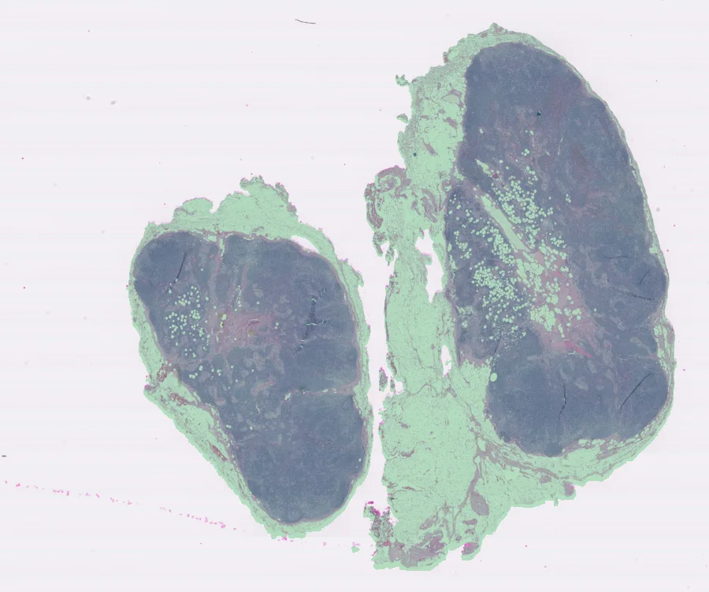
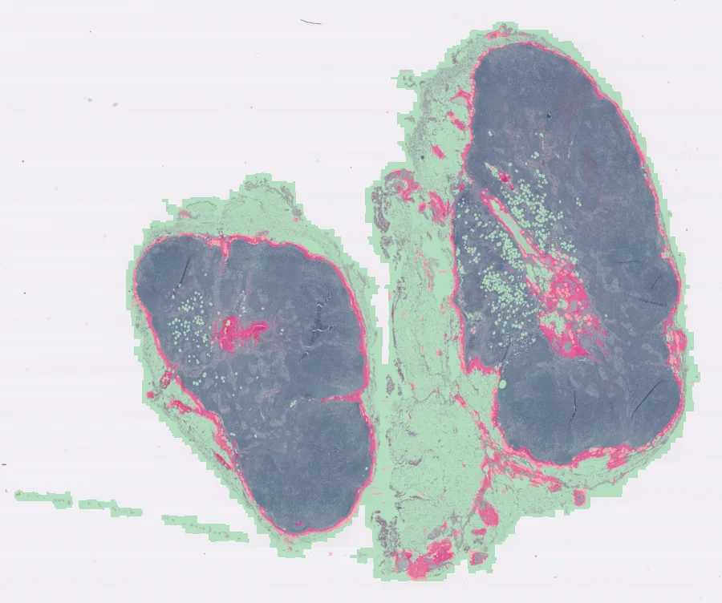
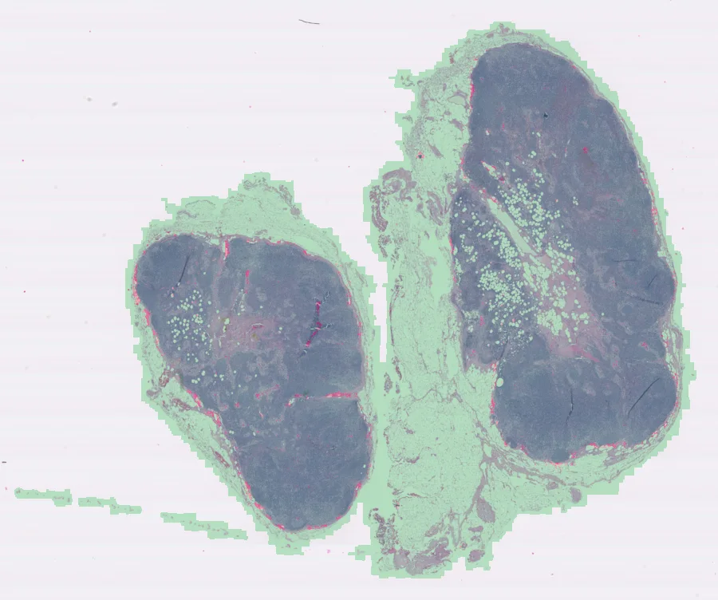

← Benchmark 3 overview · View official expert annotation
The reviewed H&E-only support contains 4,549,588 4-µm pixels. All 4,161,559 official known benign pixels form the score denominator, including 5,710 outside reviewed support. This previously inspected reference is public, so this result is reference-visible, not blind. The reviewed source-only support excludes some pale adipose under the fixed tissue rule.
Virchow2 encoded 6,126/1,599/434 tissue tiles at factors 1/2/4 with all 1,280 channels. The current U-Net and DeepLab processed 2,210 of 5,688 global patches intersecting reviewed tissue. MedSAM used 176 boxes on 92 tiles from the current one-slide U-Net. VISTA uses its unchanged generic tumor prompt and same-slide, same-support audited output. These workflows have different prompt and pretraining dependencies.
Predicted metastasis and non-metastatic tissue signals
Reference: no metastasis. An exploratory tumor-like signal needs an eight-connected focus of at least 625 pixels (0.01 mm²) in reviewed tissue. This is not a diagnosis.
| Method | Tumor-like focus | Explicit non-metastatic focus | Largest tumor-like focus, mm² | Total tumor-like area, mm² |
|---|---|---|---|---|
| Bora · tumor_093-only fit | Present | Present | 0.9765 | 6.8087 |
| Class-aware U-Net · tumor_093-only fit | No qualifying focus | Present | 0.0032 | 0.0635 |
| DeepLabV3+ · tumor_093-only fit | Present | Present | 0.0302 | 0.6969 |
| MedSAM · current U-Net boxes | No qualifying focus | Not available | 0.0055 | 0.0814 |
| VISTA-PATH · generic tumor prompt | Present | Not available | 5.3976 | 11.8594 |
Binary agreement on official known pixels
This benign slide has no reference metastasis. IoU, Dice, recall, balanced accuracy, boundary F1 and lesion recall are undefined. Specificity uses all 4,161,559 official known benign pixels, including 5,710 outside reviewed support. Native predictions are primary; shared-support predictions are a sensitivity analysis on the same denominator.
| Method | Native specificity | Shared-support specificity | Native false positives | Shared false positives | Native false-positive tissue, mm² | Shared false-positive tissue, mm² |
|---|---|---|---|---|---|---|
| Bora · tumor_093-only fit | 89.457% | 89.960% | 438,749 | 417,817 | 7.0196 | 6.6851 |
| Class-aware U-Net · tumor_093-only fit | 99.905% | 99.905% | 3,948 | 3,948 | 0.0632 | 0.0632 |
| DeepLabV3+ · tumor_093-only fit | 98.956% | 98.956% | 43,458 | 43,458 | 0.6953 | 0.6953 |
| MedSAM · current U-Net boxes | 99.878% | 99.878% | 5,072 | 5,072 | 0.0812 | 0.0812 |
| VISTA-PATH · generic tumor prompt | 82.189% | 82.189% | 741,215 | 741,215 | 11.8594 | 11.8594 |
Completion: five of five current workflows. Download exact scores and denominators. This public training-release slide is not a hidden challenge test; patient and centre separation remain unverified.
Contour fidelity: Bora was scored on a 4 µm grid. Its class mask received 6 µm smoothing, while the reviewed H&E tissue boundary remained fixed. This GeoJSON traces the exact scored mask; no extra vector smoothing was applied because that would move boundaries and change pixel agreement. Grid steps can remain visible at high zoom, especially along tissue edges.
Inspect the exact Bora GeoJSON
Interactive inspection is loading. Download the current Bora GeoJSON.
Color key for matched panels: red is a tumor-like positive signal and green is the binary negative area inside the reviewed H&E tissue support. Bora, U-Net and DeepLabV3+ explicitly output a non-metastatic class. MedSAM and VISTA-PATH do not: their green is derived by exclusion of their positive signal for display and binary scoring, not a separate benign tissue prediction.
Tissue-region overview · analysis restricted to reviewed tissue



